La ville qui grandit quand l’enfant apprend.
On gagne des pièces en apprenant, on construit sa ville, on y vit avec son avatar… et on y apprend encore.
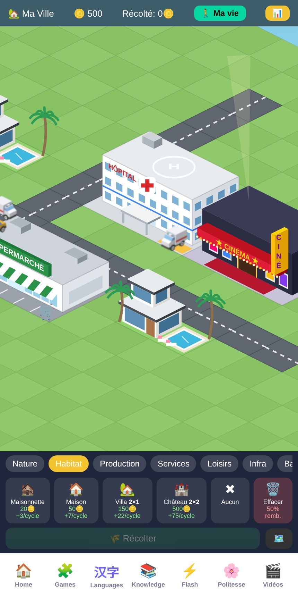
La récompense n’est pas un écran de victoire qu’on oublie : c’est une ville qui lui appartient, qui grandit au fil des semaines et qu’il a envie de montrer.
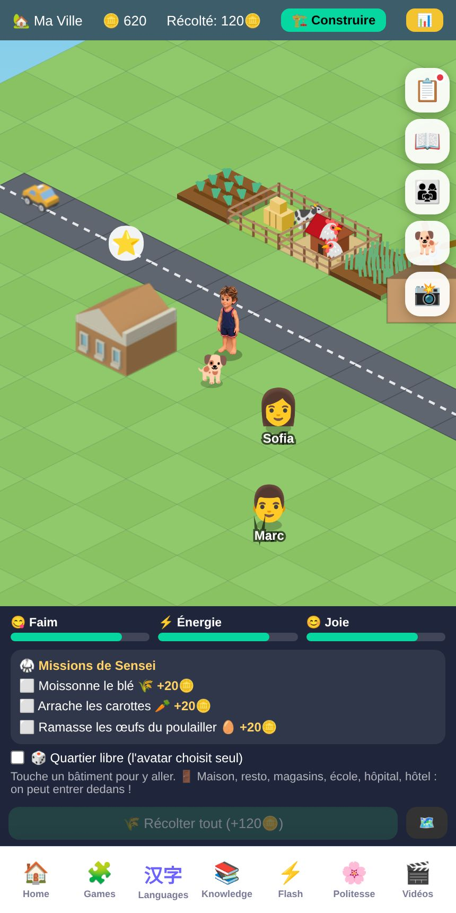
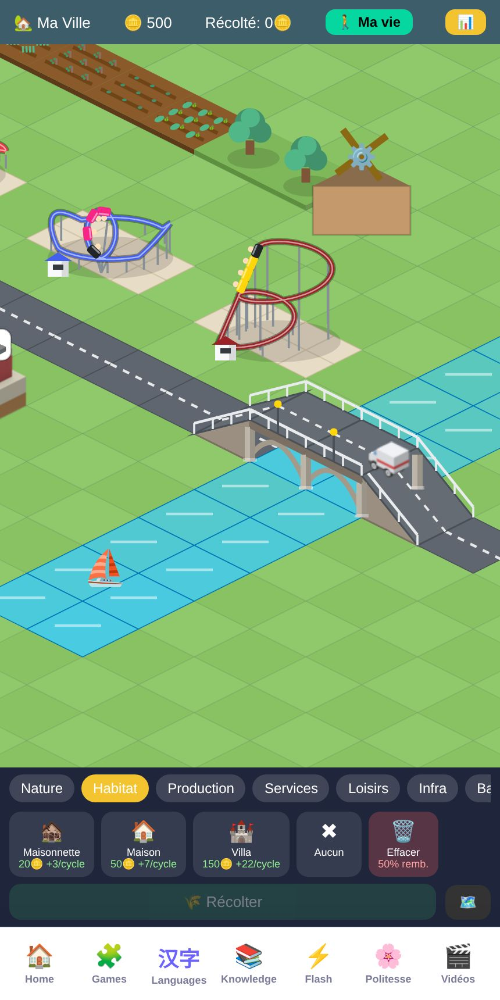
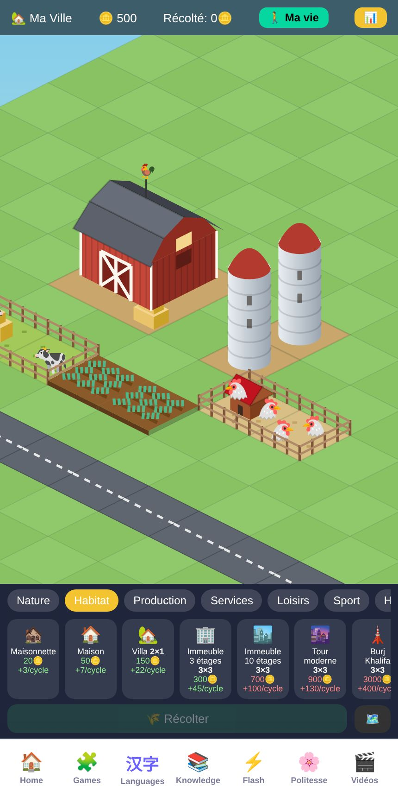
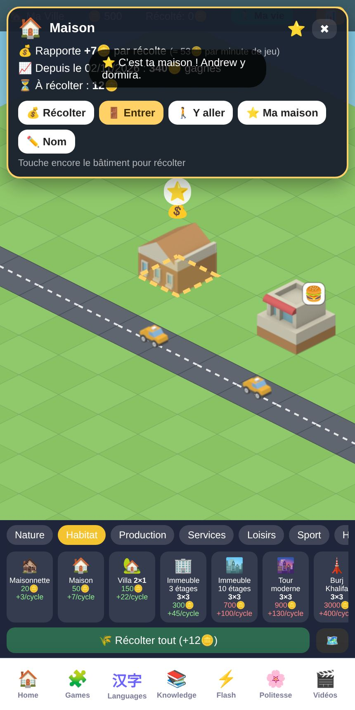
Maison, école, restaurant, magasins, hôpital, hôtels : on entre, on voit tout l’étage façon maison de poupée, puis on zoome sur une pièce.
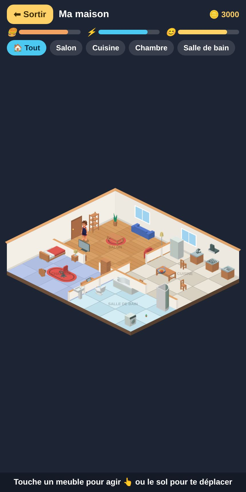
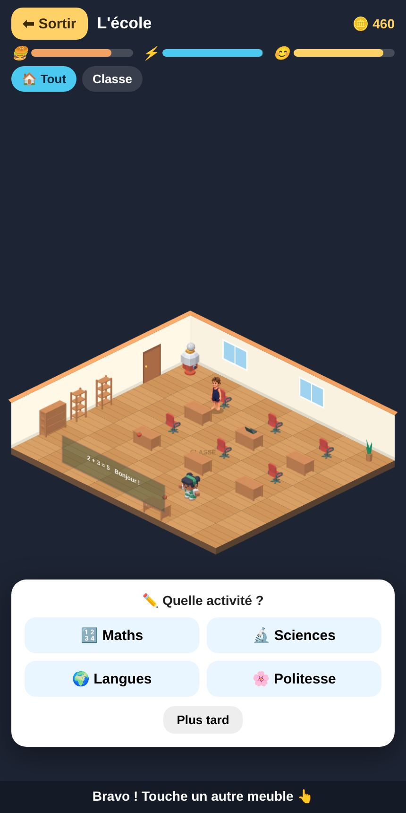
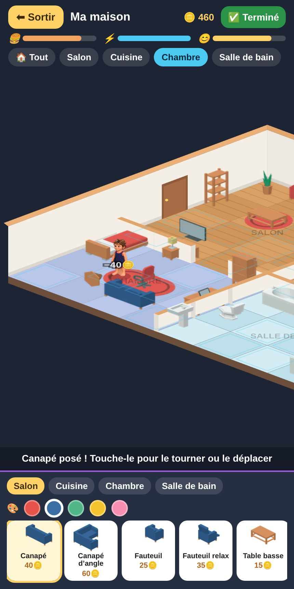
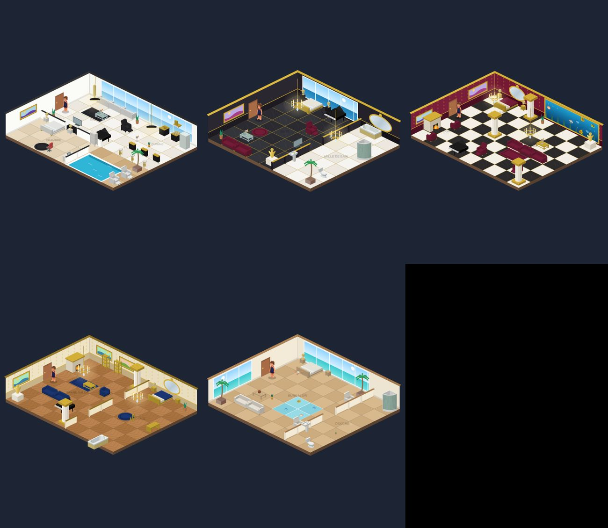
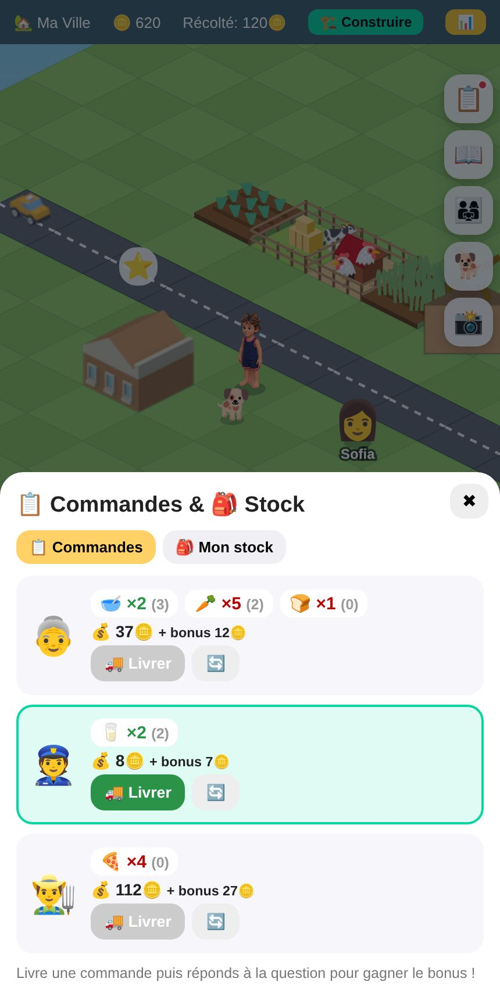
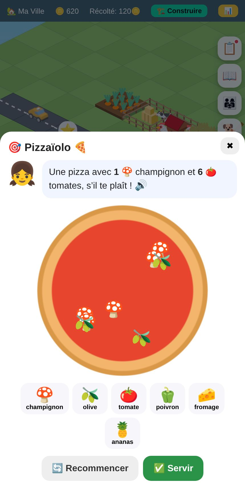
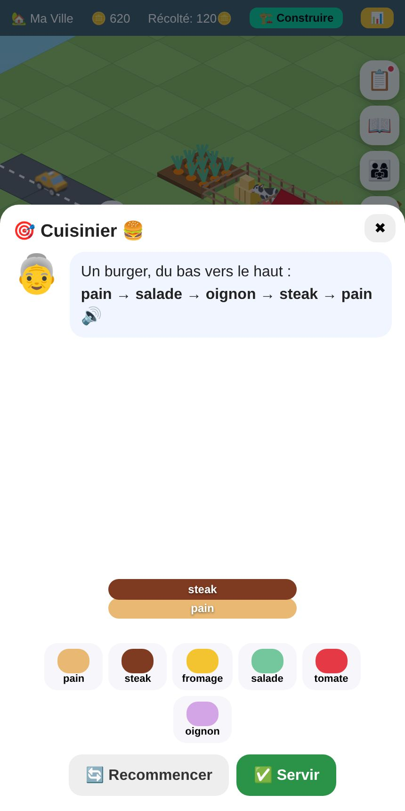
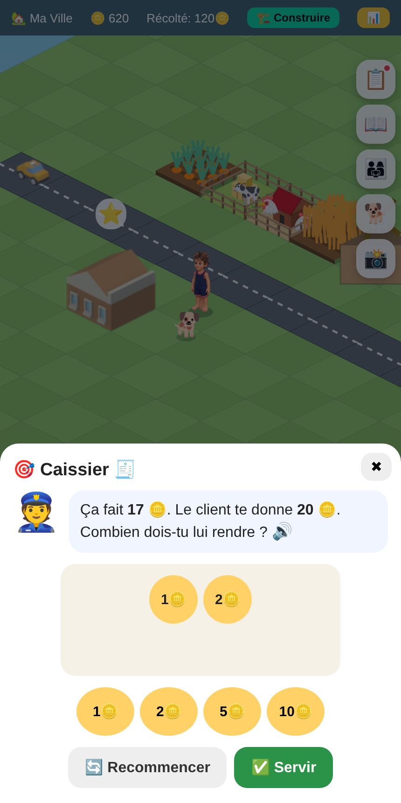
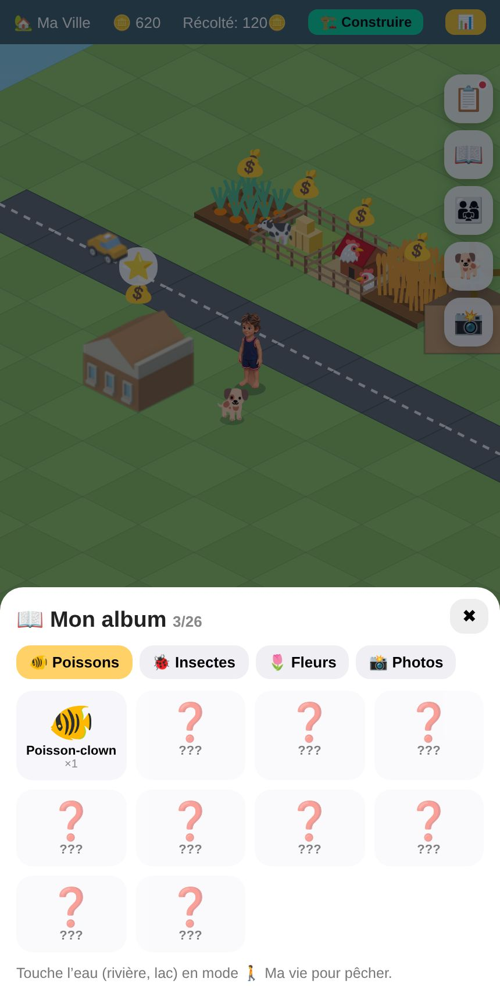
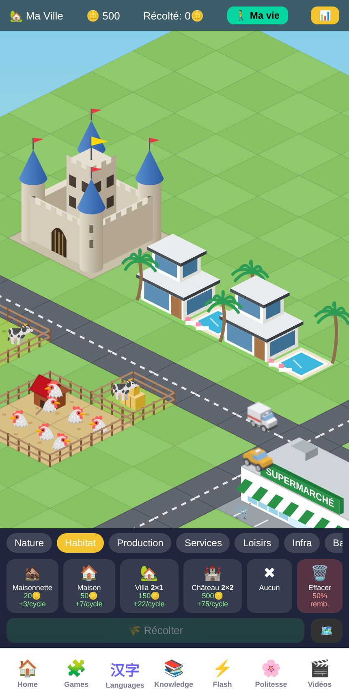